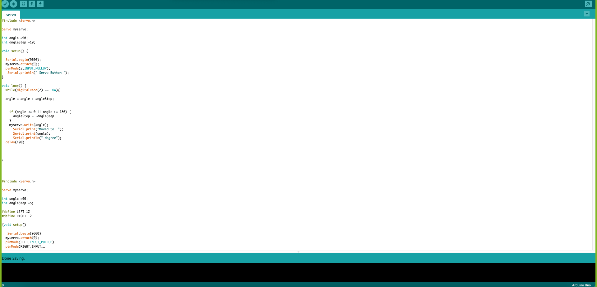

Assignment:
1. Program a microcontroller to produce an output using at least one button for input. Include a conditional statement and a for() loop.
2. Think about your final project and any additional components you might want. Start working on the 3D design for your project, especially components you might want to be lasercut or 3D printed. We can't make any promises, but we will do our best to accommodate requests within reason. Next Tuesday the 13th is the deadline for requests, in order for us to print/cut, mail, and get to you in time for you to assemble your project. (This will also be your assignment for next class). Please feel free to send us your designs prior to that for feedback. Please also feel free to use models from this collection of 3D models of kit components, or from other online collections like grabcad.com or Thingiverse.
My code is based on my final project
I have made 2 codes.
1st code is for my motor in my final project. I have coded it to start when I use a push button as my input. Also I dont want that it keeps working, I calculated the distance between my door wide open and when it is closed. For that I will need the motor to work for 5 seconds to bring the door in full motion and then the door will close on its on. I will have to oil my hinges to make the door as light as posible to reduce the load on the motor. So I have programnmed the motor to close after 5 seconds. And as I dont have my microcontroller with me so I was not able to test this, so this was totally hypothetical thinking. I have attached the screenshot of the code below.

2nd code is for the safety light. Safety light is an important aspect of this project. Hence, its code was also important. So this code basically indicates the led to blink and work for 5 seconds only. Trying to save electricity as much as possible. I have attached the screenshot of this code as well.